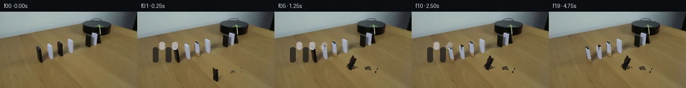

![首帧]()

Round 00
2026-11-05T13:11:53.672738+00:00像素候选变化代码 +488/−0inspection 更新
pixels c772f668a31e3ba5 · code 05ee6e9c133969d0
查看本轮 generate.py 真实 diff
--- previous/generate.py
+++ current/generate.py
@@ -0,0 +1,488 @@
+"""
+generate.py — PixelWorld-Text domino chain reaction animation.
+20 frames @ 256×144, 4 fps, 5 seconds.
+Frame 00 equals first_frame.png exactly.
+"""
+
+import numpy as np
+from PIL import Image
+from pathlib import Path
+from scipy import ndimage
+import artifact_io
+
+CASE_DIR = Path(__file__).parent
+H, W = 144, 256
+N_FRAMES = 20
+
+# ── Load first frame ──────────────────────────────────────────────
+img = Image.open(CASE_DIR / 'first_frame.png')
+base = np.array(img, dtype=np.uint8).copy() # shape (144, 256, 3)
+
+# ── Build masks ───────────────────────────────────────────────────
+dark_mask = (
+ (base[:, :, 0] < 55) & (base[:, :, 1] < 55) & (base[:, :, 2] < 55)
+)
+white_mask = (
+ (base[:, :, 0] > 160) & (base[:, :, 1] > 160) & (base[:, :, 2] > 160)
+)
+table_mask = (
+ (base[:, :, 0] > 100) & (base[:, :, 0] < 155) &
+ (base[:, :, 1] > 85) & (base[:, :, 1] < 140) &
+ (base[:, :, 2] > 45) & (base[:, :, 2] < 90)
+)
+wall_mask = (
+ (base[:, :, 0] > 140) & (base[:, :, 0] < 185) &
+ (base[:, :, 1] > 150) & (base[:, :, 1] < 195) &
+ (base[:, :, 2] > 150) & (base[:, :, 2] < 195)
+)
+
+# ── Label connected components ────────────────────────────────────
+dark_labeled, _ = ndimage.label(dark_mask)
+white_labeled, _ = ndimage.label(white_mask)
+
+# Identify key components (indices may vary; identify by position)
+# Platform: large dark area on right (cols 155-206, rows 24-59)
+# Stick: dark area cols 107-116, rows 57-83
+# Black domino: dark area cols 68-79, rows 67-95
+
+comp_sizes = {}
+for i in range(1, dark_labeled.max() + 1):
+ mask = dark_labeled == i
+ ys, xs = np.where(mask)
+ comp_sizes[i] = {
+ 'size': len(ys), 'ymin': ys.min(), 'ymax': ys.max(),
+ 'xmin': xs.min(), 'xmax': xs.max(), 'cy': ys.mean(), 'cx': xs.mean()
+ }
+
+# Sort by xmin to identify left-to-right
+sorted_comps = sorted(comp_sizes.items(), key=lambda x: x[1]['xmin'])
+
+# Black domino (leftmost large dark component not at edge)
+domino_comp = None
+stick_comp = None
+platform_comp = None
+
+for idx, info in sorted_comps:
+ if info['size'] < 50:
+ continue
+ cx = info['cx']
+ if cx < 85 and info['xmin'] > 60:
+ domino_comp = idx # black domino
+ elif 100 < cx < 120 and info['xmin'] > 100:
+ stick_comp = idx # stick
+ elif cx > 150 and info['xmin'] > 150:
+ platform_comp = idx # platform
+
+print(f"Domino comp: {domino_comp} at {comp_sizes[domino_comp]}")
+print(f"Stick comp: {stick_comp} at {comp_sizes[stick_comp]}")
+print(f"Platform comp: {platform_comp} at {comp_sizes[platform_comp]}")
+
+# White domino component
+white_comp = None
+for i in range(1, white_labeled.max() + 1):
+ mask = white_labeled == i
+ ys, xs = np.where(mask)
+ if len(ys) > 10 and xs.min() > 80 and xs.max() < 100:
+ white_comp = i
+ break
… diff truncated; 401 more lines …